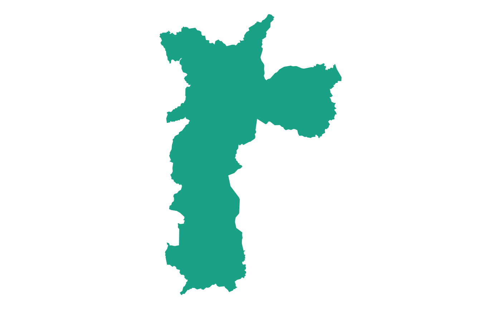

The geobr package provides quick and easy access to official spatial data sets of Brazil. The syntax of all geobr functions operate on a simple logic that allows users to easily download a wide variety of data sets with updated geometries and harmonized attributes and geographic projections across geographies and years. This vignette presents a quick intro to geobr.
Installation
You can install geobr from CRAN or the development version to use the latest features.
# From CRAN
install.packages("geobr")
# Development version
utils::remove.packages('geobr')
devtools::install_github("ipeaGIT/geobr", subdir = "r-package")Now let’s load the libraries we’ll use in this vignette.
General usage
Available data sets
The geobr package covers 27 spatial data sets, including a variety of
political-administrative and statistical areas used in Brazil. You can
view what data sets are available using the list_geobr()
function.
# Available data sets
datasets <- list_geobr()
head(datasets)
#> function geography
#> 1 `read_country` Country
#> 2 `read_region` Region
#> 3 `read_state` States
#> 4 `read_meso_region` Meso region
#> 5 `read_micro_region` Micro region
#> 6 `read_intermediate_region` Intermediate region
#> years
#> 1 1872, 1900, 1911, 1920, 1933, 1940, 1950, 1960, 1970, 1980, 1991, 2000, 2001, 2010, 2013, 2014, 2015, 2016, 2017, 2018, 2019, 2020
#> 2 2000, 2001, 2010, 2013, 2014, 2015, 2016, 2017, 2018, 2019, 2020
#> 3 1872, 1900, 1911, 1920, 1933, 1940, 1950, 1960, 1970, 1980, 1991, 2000, 2001, 2010, 2013, 2014, 2015, 2016, 2017, 2018, 2019, 2020
#> 4 2000, 2001, 2010, 2013, 2014, 2015, 2016, 2017, 2018, 2019, 2020
#> 5 2000, 2001, 2010, 2013, 2014, 2015, 2016, 2017, 2018, 2019, 2020
#> 6 2017, 2019, 2020
#> source
#> 1 IBGE
#> 2 IBGE
#> 3 IBGE
#> 4 IBGE
#> 5 IBGE
#> 6 IBGEDownload spatial data as sf objects
The syntax of all geobr functions operate one the same logic, so the code to download the data becomes intuitive for the user. Here are a few examples.
Download an specific geographic area at a given year
# State of Sergige
state <- read_state(
code_state="SE",
year=2018,
showProgress = FALSE
)
# Municipality of Sao Paulo
muni <- read_municipality(
code_muni = 3550308,
year=2010,
showProgress = FALSE
)
ggplot() +
geom_sf(data = muni, color=NA, fill = '#1ba185') +
theme_void()
Download all geographic areas within a state at a given year
# All municipalities in the state of Minas Gerais
muni <- read_municipality(code_muni = "MG",
year = 2007,
showProgress = FALSE)
# All census tracts in the state of Rio de Janeiro
cntr <- read_census_tract(
code_tract = "RJ",
year = 2010,
showProgress = FALSE
)
head(muni)If the parameter code_ is not passed to the function,
geobr returns the data for the whole country by default.
# read all intermediate regions
inter <- read_intermediate_region(
year = 2017,
showProgress = FALSE
)
# read all states
states <- read_state(
year = 2019,
showProgress = FALSE
)
head(states)
#> Simple feature collection with 6 features and 5 fields
#> Geometry type: MULTIPOLYGON
#> Dimension: XY
#> Bounding box: xmin: -73.99045 ymin: -13.6937 xmax: -46.06151 ymax: 5.271841
#> Geodetic CRS: SIRGAS 2000
#> code_state abbrev_state name_state code_region name_region
#> 1 11 RO Rondônia 1 Norte
#> 2 12 AC Acre 1 Norte
#> 3 13 AM Amazônas 1 Norte
#> 4 14 RR Roraima 1 Norte
#> 5 15 PA Pará 1 Norte
#> 6 16 AP Amapá 1 Norte
#> geom
#> 1 MULTIPOLYGON (((-65.3815 -1...
#> 2 MULTIPOLYGON (((-71.07772 -...
#> 3 MULTIPOLYGON (((-69.83766 -...
#> 4 MULTIPOLYGON (((-63.96008 2...
#> 5 MULTIPOLYGON (((-51.43248 -...
#> 6 MULTIPOLYGON (((-50.45011 2...Important note about data resolution
All functions to download polygon data such as states, municipalities
etc. have a simplified argument. When
simplified = FALSE, geobr will return the original data set
with high resolution at detailed geographic scale (see documentation).
By default, however, simplified = TRUE and geobr returns
data set geometries with simplified borders to improve speed of
downloading and plotting the data.
Plot the data
Once you’ve downloaded the data, it is really simple to plot maps
using ggplot2.
# Remove plot axis
no_axis <- theme(axis.title=element_blank(),
axis.text=element_blank(),
axis.ticks=element_blank())
# Plot all Brazilian states
ggplot() +
geom_sf(data=states, fill="#2D3E50", color="#FEBF57", size=.15, show.legend = FALSE) +
labs(subtitle="States", size=8) +
theme_minimal() +
no_axisPlot all the municipalities of a particular state, such as Rio de Janeiro:
# Download all municipalities of Rio
all_muni <- read_municipality(
code_muni = "RJ",
year= 2010,
showProgress = FALSE
)
# plot
ggplot() +
geom_sf(data=all_muni, fill="#2D3E50", color="#FEBF57", size=.15, show.legend = FALSE) +
labs(subtitle="Municipalities of Rio de Janeiro, 2000", size=8) +
theme_minimal() +
no_axisThematic maps
The next step is to combine data from geobr package with other data sets to create thematic maps. In this first example, we will be using data from the (Atlas of Human Development (by Ipea/FJP and UNPD) to create a choropleth map showing the spatial variation of Life Expectancy at birth across Brazilian states.
Merge external data
First, we need a data.frame with estimates of Life
Expectancy and merge it to our spatial database. The two-digit
abbreviation of state name is our key column to join these two
databases.
# Read data.frame with life expectancy data
df <- utils::read.csv(system.file("extdata/br_states_lifexpect2017.csv", package = "geobr"), encoding = "UTF-8")
states$name_state <- tolower(states$name_state)
df$uf <- tolower(df$uf)
# join the databases
states <- dplyr::left_join(states, df, by = c("name_state" = "uf"))Plot thematic map
ggplot() +
geom_sf(data=states, aes(fill=ESPVIDA2017), color= NA, size=.15) +
labs(subtitle="Life Expectancy at birth, Brazilian States, 2014", size=8) +
scale_fill_distiller(palette = "Blues", name="Life Expectancy", limits = c(65,80)) +
theme_minimal() +
no_axisUsing geobr together with censobr
Following the same steps as above, we can use together geobr with our sister package censobr to map the proportion of households connected to a sewage network in Brazilian municipalities
First, we need to download households data from the Brazilian census
using the read_households() function.
library(censobr)
library(arrow)
#>
#> Attaching package: 'arrow'
#> The following object is masked from 'package:utils':
#>
#> timestamp
hs <- read_households(year = 2010,
showProgress = FALSE)
#> Downloading data and storing it locally for future use.Now we’re going to (a) group observations by municipality, (b) get the number of households connected to a sewage network, (c) calculate the proportion of households connected, and (d) collect the results.
esg <- hs |>
collect() |>
group_by(code_muni) |> # (a)
summarize(rede = sum(V0010[which(V0207=='1')]), # (b)
total = sum(V0010)) |> # (b)
mutate(cobertura = rede / total) |> # (c)
collect() # (d)
head(esg)
#> # A tibble: 6 × 4
#> code_muni rede total cobertura
#> <int> <dbl> <dbl> <dbl>
#> 1 1100015 0 7443. 0
#> 2 1100023 182. 27654. 0.00660
#> 3 1100031 0 1979. 0
#> 4 1100049 10019. 24413. 0.410
#> 5 1100056 5.81 5399 0.00108
#> 6 1100064 28.9 6013. 0.00480Now we only need to download the geometries of Brazilian municipalities from geobr, merge the spatial data with our estimates and map the results.
# download municipality geometries
muni_sf <- geobr::read_municipality(year = 2010,
showProgress = FALSE)
#> Using year/date 2010
# merge data
esg_sf <- left_join(muni_sf, esg, by = 'code_muni')
# plot map
ggplot() +
geom_sf(data = esg_sf, aes(fill = cobertura), color=NA) +
labs(title = "Share of households connected to a sewage network") +
scale_fill_distiller(palette = "Greens", direction = 1,
name='Share of\nhouseholds',
labels = scales::percent) +
theme_void()